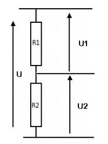
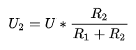

Twee weerstanden in serie verdelen de spanning onder elkaar. Dat klinkt onnozel, maar het is de manier waarop je zowat elke weerstandssensor uitleest: een LDR, een thermistor, een rekstrookje. Je Arduino kan namelijk geen weerstand meten, alleen spanning.
Een LDR is een weerstand die verandert met het licht: donker geeft veel weerstand, licht weinig. Maar analogRead() meet geen ohm, het meet volt. Hang je de LDR gewoon tussen 5 V en een analoge ingang, dan meet je altijd 5 V, hoe donker het ook is: er loopt immers geen stroom, dus valt er ook geen spanning over de LDR.
Je hebt dus een tweede weerstand nodig, zodat er wel stroom kan lopen en de spanning zich over de twee kan verdelen. Die verdeling verschuift mee met je sensor, en dat is wat je meet.

Twee weerstanden in serie over een spanning U verdelen die spanning in verhouding tot hun waarde. De spanning over R2 is:

Je meet met je Arduino het punt tussen de twee weerstanden, dus U2. Dat volgt rechtstreeks uit de wet van Ohm: door beide weerstanden loopt dezelfde stroom, dus verhouden hun spanningen zich als hun weerstandswaarden.
Is R2 veel groter dan R1, dan gaat bijna de hele spanning naar R2 en meet je ongeveer 5 V. Is R2 veel kleiner, dan meet je bijna 0 V. Zijn ze gelijk, dan meet je precies de helft. Meer dan die drie punten heb je meestal niet nodig om te weten of je schakeling de goede kant opgaat.
Bij een sensor is één van de twee weerstanden de sensor zelf, en de andere kies je. Die keuze bepaalt hoe bruikbaar je meting wordt.
Neem je een vaste weerstand die veel te groot of veel te klein is tegenover je sensor, dan zit je meting altijd tegen 5 V of tegen 0 V geplakt en verandert er nauwelijks iets als de sensor beweegt. Je gooit dan het grootste deel van je 1024 meetstapjes weg.
Kies je vaste weerstand ergens in het midden van het bereik dat je sensor doorloopt, meetkundig gezien. Varieert je LDR tussen 400 Ω en 9000 Ω, dan zit je goed rond de 2 kΩ. Zo krijg je het grootste verschil tussen je laagste en je hoogste meting.
Twijfel je tussen een paar waarden die je in huis hebt, vul dan gewoon de formule in voor elk van hen en kijk welke het grootste verschil tussen minimum en maximum oplevert. Dat is precies wat je bij LDR: lichtmeting doet.
Een potentiometer met drie pootjes is niets anders dan een spanningsdeler waarvan je het middenpunt kan verschuiven. De twee buitenste pootjes hang je aan 5 V en aan GND, en het middelste pootje, de loper, is precies dat punt tussen R1 en R2. Draaien aan de knop verschuift de verhouding tussen de twee helften, en dus de spanning die je meet.
Daarom levert een potentiometer netjes de volle 0 tot 1023 op: de loper kan van het ene uiterste naar het andere, dus van 0 V tot 5 V.
De formule hierboven gaat ervan uit dat er verder niets aan het middenpunt hangt dat stroom trekt. Een analoge ingang van de Arduino voldoet daaraan: die is hoogimpedant en trekt vrijwel geen stroom. Hang je er wel iets aan dat stroom vraagt, bijvoorbeeld rechtstreeks een led, dan klopt je berekening niet meer en zakt de gemeten spanning in.